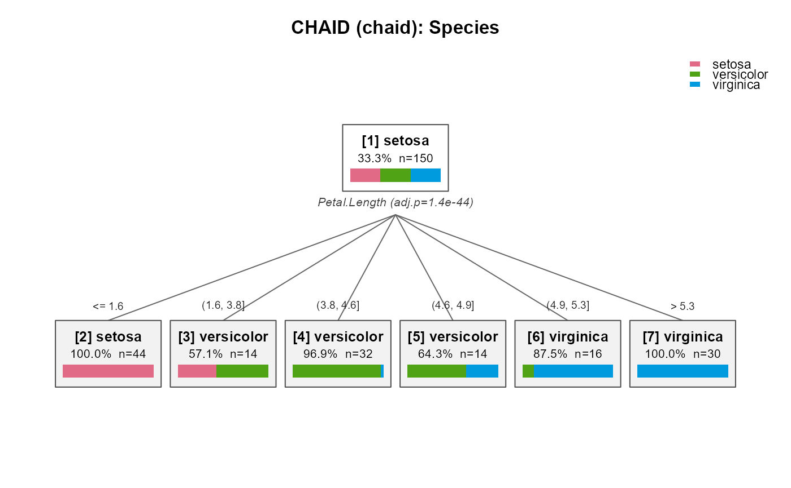

Plot a CHAID tree with base graphics
plot.chaid.RdDraws the tree top-down using base graphics only. For categorical responses each node shows the predicted class, its share, the node size and optionally a horizontal bar of the class distribution. Edges are labelled with the (possibly merged) predictor categories.
Usage
# S3 method for class 'chaid'
plot(
x,
cex = 0.8,
label_len = 22,
palette = NULL,
show_bar = TRUE,
main = NULL,
...
)Arguments
- x
A fitted
"chaid"object returned bychaid().- cex
Base character expansion for node and edge labels.
- label_len
Maximum number of characters for edge (split group) labels; longer labels are truncated.
- palette
Vector of class colours for categorical responses. Defaults to
grDevices::hcl.colors(n, "Dark 3").- show_bar
Logical. Draw a class distribution bar inside each node (categorical responses only).
- main
Plot title. Defaults to the response name and method.
- ...
Ignored.
See also
chaid(), chaid_dot() for publication-quality Graphviz
output, chaid_plotly() for an interactive version.
Examples
fit <- chaid(Species ~ ., data = iris,
control = chaid_control(min_parent = 30, min_child = 10))
plot(fit)
